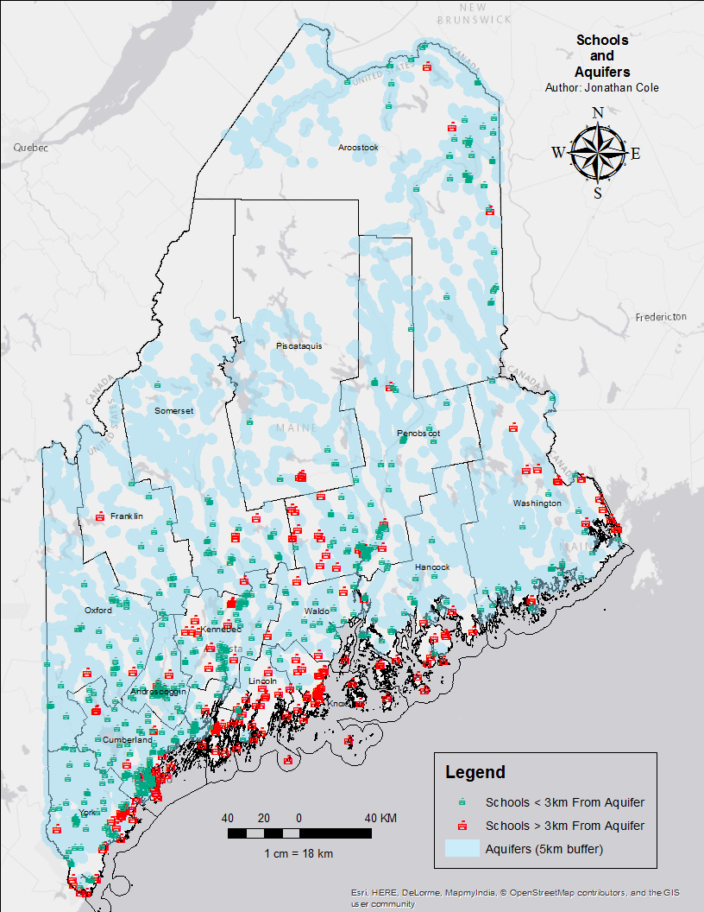

Spurious (Spatial) Correlations
This is a project I did for Introduction to GIS at my university. Inspired by Tyler Vigen's Spurious Correlations, I wanted to apply similar techniques to GIS data in the state of Maine. Below are my results.
Eagles and K-Cups
With the exception of Washington County, eagles seem to make their homes in areas where household K-Cup ownership is at or higher than the national average.

Schools and Aquifers
589 of Maine’s 795 schools are within 3 km of an aquifer. This means that if you are at a school, there is a 74% chance that you are within walking distance of a significant source of groundwater.
U.S. Cellular Coverage and Oil Spill Hotspots
US Cellular offers great coverage in areas where hazardous oil spills occur the most.

Cemeteries and Broadband Coverage
3875 of Maine's 3929 cemeteries are located exactly within broadband coverage areas (98.63%).
Red Cross Facilities and Bedrock Formation Eras
In what I can only consider to be a deliberate move, Red Cross has built their facilities in Maine on top of bedrock formed before the Devonian era. This means that if you got into a time machine and went back to the period at which the bedrock was formed beneath any Red Cross facility, you would not find sharks, ferns, trees, insects, or land vertebrates.
Disclaimer:
These datasets are in no way scientifically rigorous.
Sources: